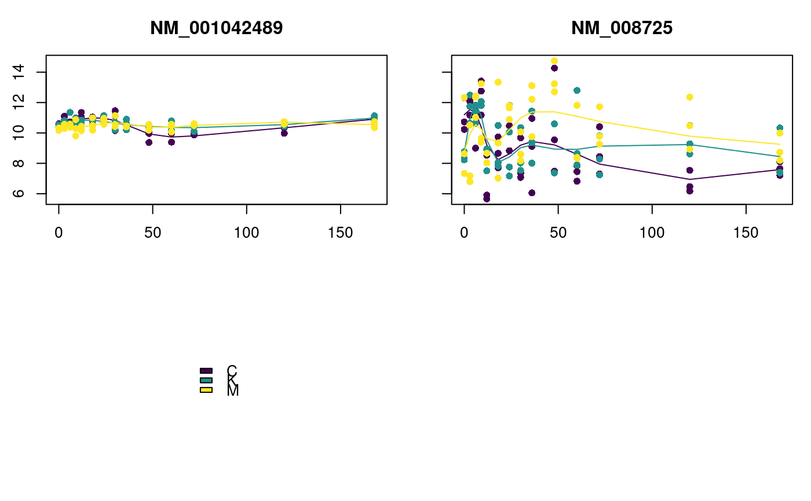
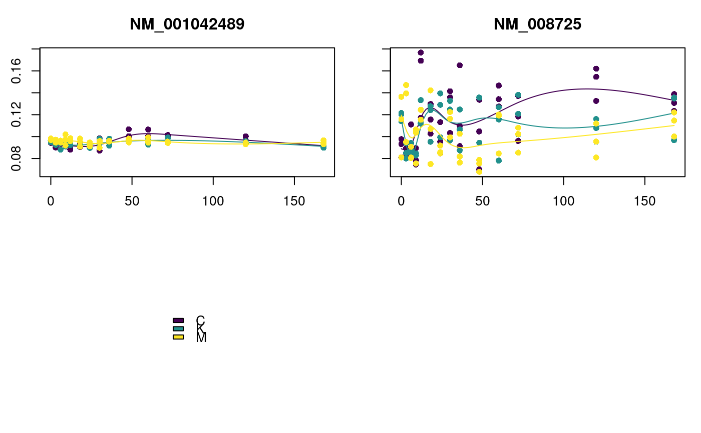

plot_splines_data.RdPlotting splines
# S4 method for Moanin,matrix plot_splines_data( object, data, colors = NULL, smooth = FALSE, legend = TRUE, legendArgs = NULL, subset_conditions = NULL, subset_data = NULL, simpleY = TRUE, centroid = NULL, scale_centroid = c("toData", "toCentroid", "none"), mar = c(2.5, 2.5, 3, 1), mfrow = NULL, addToPlot = NULL, ylab = "", xlab = "Time", ... ) # S4 method for Moanin,numeric plot_splines_data(object, data, ...) # S4 method for Moanin,data.frame plot_splines_data(object, data, ...) # S4 method for Moanin,DataFrame plot_splines_data(object, data, ...) # S4 method for Moanin,missing plot_splines_data(object, data, ...)
| object | An object of class |
|---|---|
| data | matrix containing the data to be plotted, where each row of the
data provided will be plotted as a separate plot. If missing, will rely on
data in |
| colors | vector, optional, default NULL. Vector of colors |
| smooth | boolean, optional, default: FALSE. Whether to smooth the centroids or not. |
| legend | boolean whether to include a legend (default:TRUE) |
| legendArgs | list of arguments to be passed to legend command (if
|
| subset_conditions | list if provided, only plots the subset of conditions provided. Else, plots all conditions |
| subset_data | list if provided, only plots the subset of data (ie, the rows) provided. Can be any valid vector for subsetting a matrix. See details. |
| simpleY | boolean, if true, will plot all genes on same y-axis and minimize the annotation of the y axis to only label the axis in the exterior plots (the x-axis is always assumed to be the same across all plots and will always be simplified) |
| centroid | numeric vector (or matrix of 1 row) with data to use to fit
the splines. If |
| scale_centroid | determines whether the centroid data given in
|
| mar | vector of margins to set the space around each plot (see
|
| mfrow | a vector of integers of length 2 defining the grid of plots to be
created (see |
| addToPlot | A function that will be called after the plotting, allowing the user to add more to the plot. |
| ... | arguments to be passed to the individual plot commands (Will be sent to all plot commands) |
This function creates a plot and does not return anything to the user.
If data is NULL, the data plotted will be from
assay(object), after log-transformation if
log_transform(object)=TRUE.
If centroid is missing, then splines will be estimated (per
group) for the the data in data -- separately for each row of
data. If centroid is provided, this data will be used to plot
a spline function, and this same spline will be plotted for each row of
data. This is useful, for example, in plotting cluster centroids
over a series of genes.
If the user set log_transform=TRUE in the creation of the
Moanin object, the data will be log transformed before plotting and
calculating the spline fits.
# First, load some data and create a moanin model data(exampleData) moanin = create_moanin_model(data=testData,meta=testMeta, degrees_of_freedom=6) # The moanin model contains all the information for plotting purposes. The # plot_splines_data will automatically fit the splines from the # information contained in the moanin model genes = c("NM_001042489", "NM_008725") plot_splines_data(moanin, subset_data=genes, mfrow=c(2, 2)) # By default, same axis for all genes. Can change with 'simpleY=FALSE' plot_splines_data(moanin, subset_data=genes, smooth=TRUE, mfrow=c(2,2), simpleY=FALSE)# The splines can also be smoothed plot_splines_data(moanin, subset_data=genes, smooth=TRUE, mfrow=c(2, 2))# You can provide different data (on same subjects), # instead of data in moanin object # (in which case moanin just provides grouping information) plot_splines_data(moanin, data=1/assay(moanin), subset_data=genes, smooth=TRUE, mfrow=c(2, 2))# You can also provide data to use for fitting splines to argument # "centroid". This is helpful for overlaying centroids or predicted data # Here we do a silly example, just to demonstrate syntax, # where we use the data from the first gene as our centroid to fit a # spline estimate, but plot data from genes 3-4 plot_splines_data(moanin, centroid=assay(moanin[1,]), subset_data=3:4, smooth=TRUE, mfrow=c(2,2))